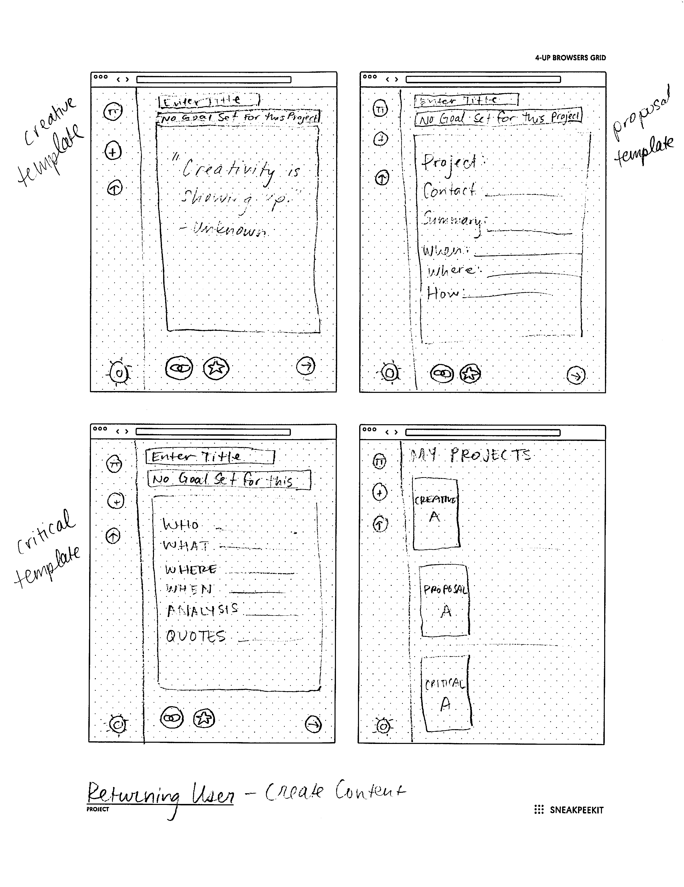
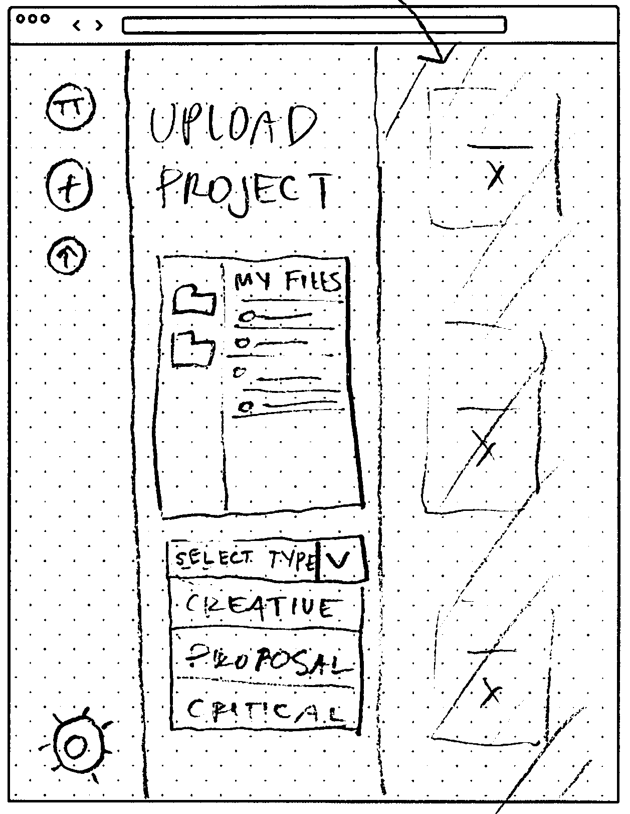
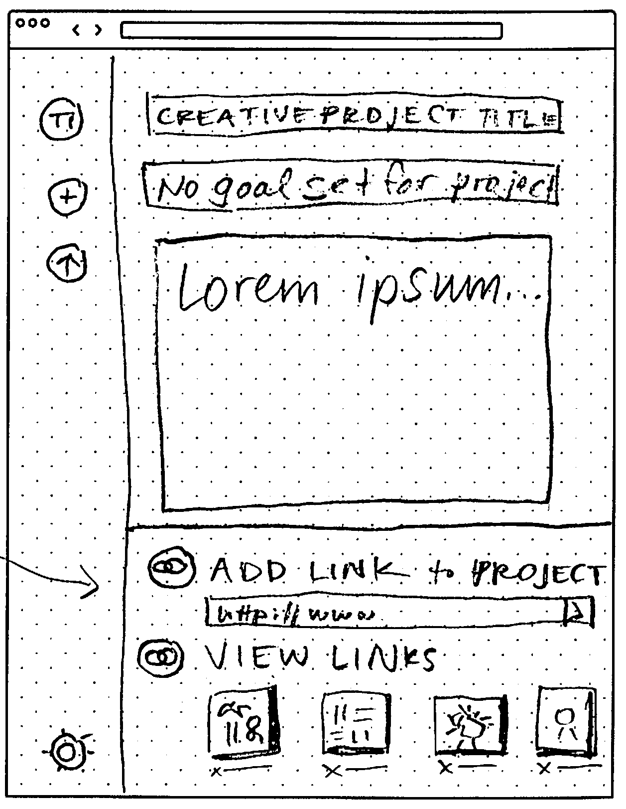
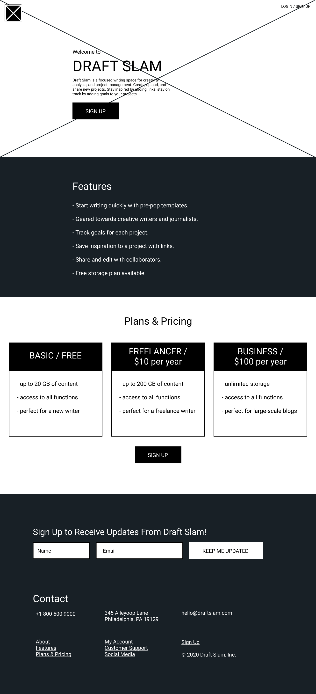
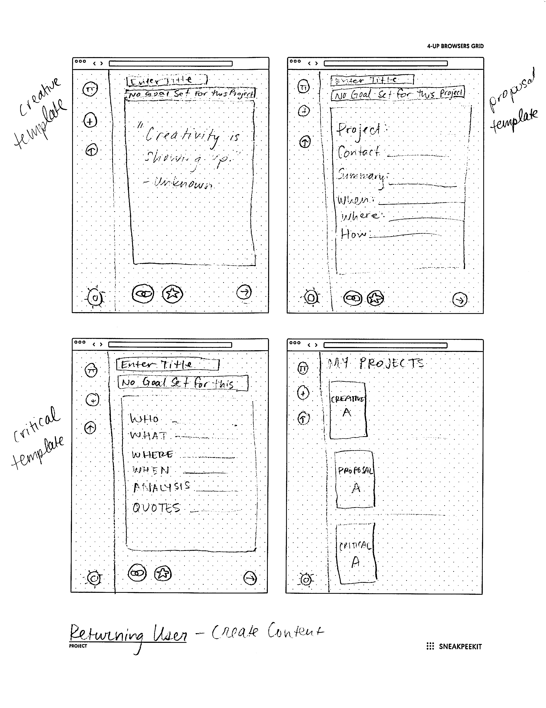
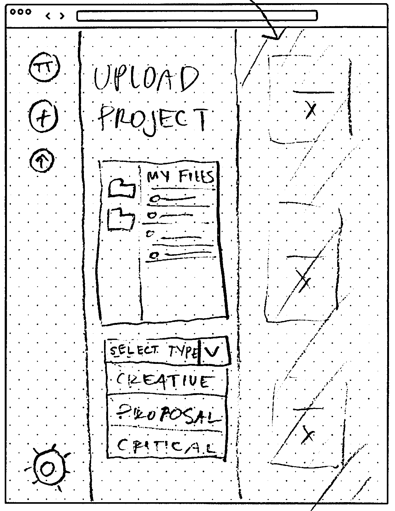
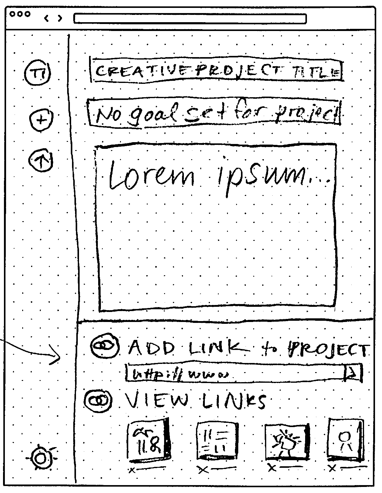
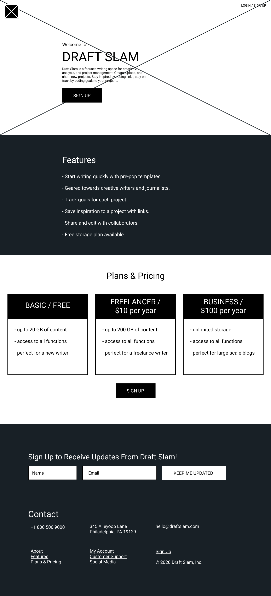
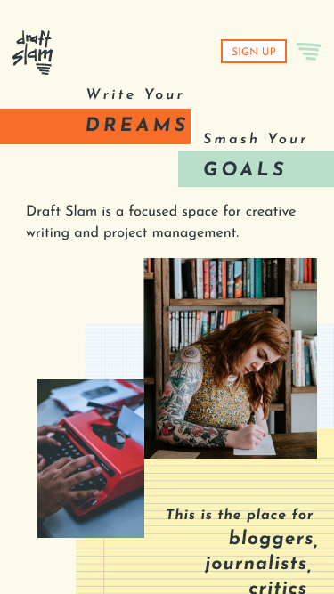
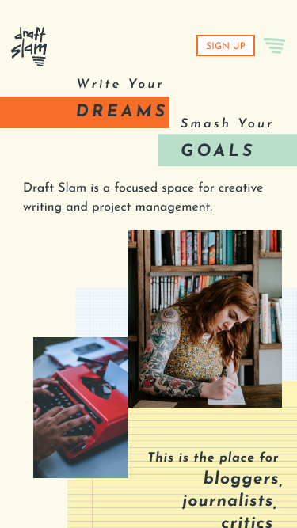

CASE STUDY
Draft Slam
a cloud-based app for creative writers

CHALLENGE
There aren’t many cloud-based storage apps designed specifically for the needs of creative writers and professionals.
MY ROLES
- user research
- information architecture
- wireframe sketches
- digital wireframes
- usability testing
- brand characteristics
- Figma and inVision mockups
USER RESEARCH FINDINGS
Participants cited seeing the edits their collaborators make and clear attainable goals for each collaborator as ways to make collaboration easier.
Through using cloud-based storage users were hoping to achieve more organization, use less paper, and grow their business in the next year. This survey revealed users value the storage and organization of content in their current cloud-based apps, and the ability to share content easily.
Most were interested in apps that integrated with each other. There is room in the market for cloud-based storage to appeal to the niche market of creative writers.
USER SURVEY PARTICIPANTS
- college degree +
- women between 27-35
- from Philadelphia
MOST USED APPS
- Google Drive
- Dropbox
COMPETITIVE ANALYSIS FINDINGS
- There is need for a writing app with collaboration and a template library.
- Appeal to all writers / use all device platforms to reach a wider audience.
- Simplicity in design and layout with less screens and concise directions.
USER PERSONAS
I considered creative writers who balance side projects with their main employment, and enjoy collaboration. My focus was personas working in theater and visual arts.
USER STORIES
Based on the competitive analysis and user’s needs, these 10 user stories were generated for the minimum viable product.
USER FLOWS
User Flows for Draft Slam followed the highest priority user stories. Flows were created for new users to create an account and view shared content. Returning user flows include creating, organizing, saving and uploading content.


WIREFRAMES
When creating wireframes I kept the idea of simplicity in mind. I decided to incorporate overlays and drawers into the application to simplify the screens when using them to create content.
 







USABILITY TESTING
TASKS
- Create new account
- Add content
- Organize content
IMPRESSIONS
- positive reaction to design
- unsure of the purpose of the site
- completed first two tasks without any errors
- last task revealed some problem areas
- wanted templates and folders to be editable
CHANGES MADE
- rework content strategy
- about paragraph needs more detail
- remove upload button at the bottom
- gear icon is confusing
BRAND CHARACTERISTICS
Someone who’s using this app for administrative tasks needs this app to be organized, clear, and direct. A creative project user needs this app to have a fun, playful feel with easy collaboration views. Overall the app should feel fun, organized, and helpful.
COLOR PALETTE
The color palette is inspired by the colors on a legal pad, ink, and a basketball. These bright colors support the brand’s fun feel, while also reminding the user of the writing they do by hand.

TYPOGRAPHY
The Draft Slam logotype is unique to its logo. It shows that the brand is creative, helpful, and active. It reminds users of their own handwriting and achieving their writing goals. Josefin Sans has a clean, neutral, and friendly appearance that pairs well with the custom logo typeface.


LOGO + DESIGN PROCESS
After looking at all of my designs and ideas, I arrived at Draft Slam as the name of my app. It conjures fun images that communicate the collaborative nature of the application.
The imagery of a slam dunk comes to mind to let the user know they will be achieving their goals with this app. The logo ideas I sketched are inspired by sports, basketball, and documents. These feel whimsical, simple, and brightly colored.

HIFI MOCKUPS
Overall when designing I kept simplicity in mind and wanted to feature the grid and legal paper backgrounds.
 

USABILITY + PREFERENCE TESTING
TASKS
- Login to account
- Add content
- Organize content
IMPRESSIONS
- struggled to login on the mobile app
- confusing prototype
- preferred a bolder look on the dashboard
CHANGES MADE
- redesign hamburger icon
- add login button to mobile home screen
- moved upload to current project drawer
- changed “My Project” to dark blue

CONCLUSION
Sticking with simplicity worked well for this project. Some of the biggest design flaws were restricting the user’s ability to customize their dashboard, vague content, and vague prototypes.
The biggest insight I gained from this project was how to write surveys for the problem and to avoid scope creep.